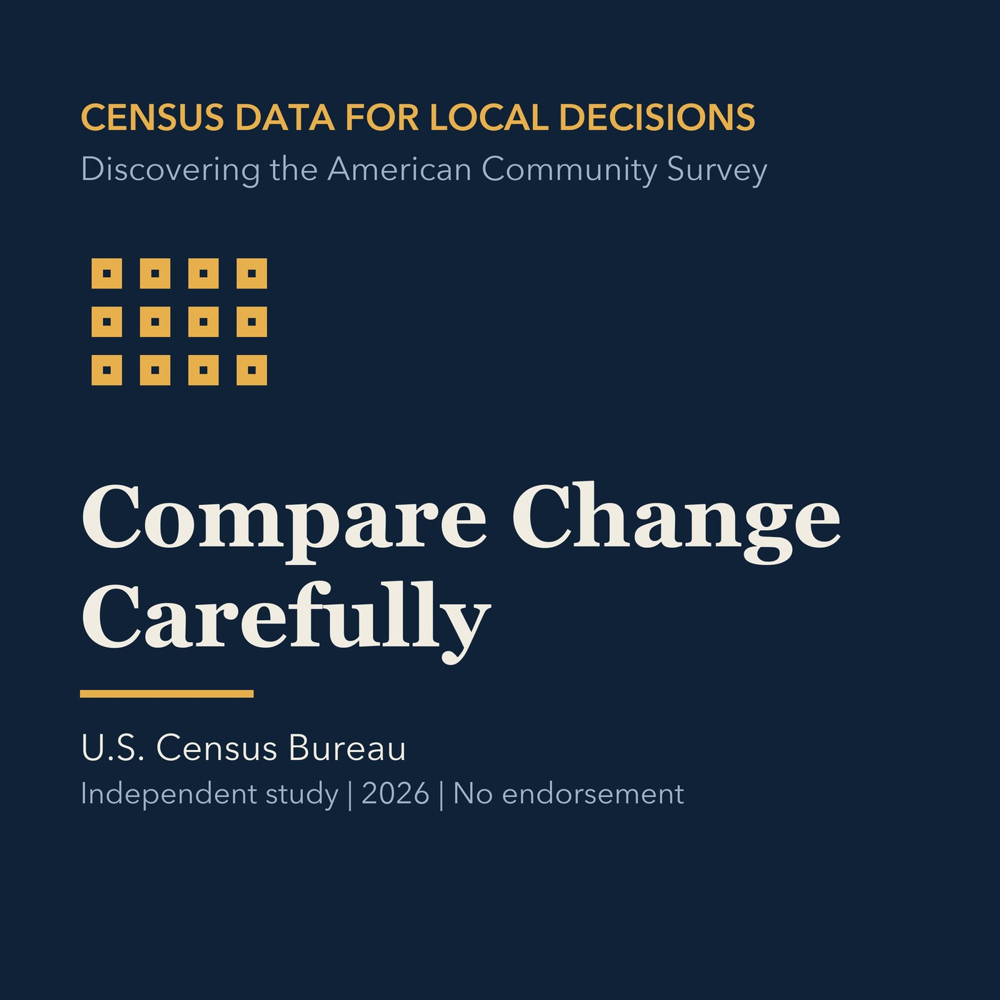

EPISODE 13
Compare Change Carefully
Builds defensible comparisons across years, boundaries, universes, and inflation.

- Stable GUID
e35278a6-bf67-5d38-8332-898689c262d8- Release
- census-academy-v2026.3
- SHA-256
be49fa8d94de2a4d07cc1a618483d8b61836fd5f280687681888834882d34076